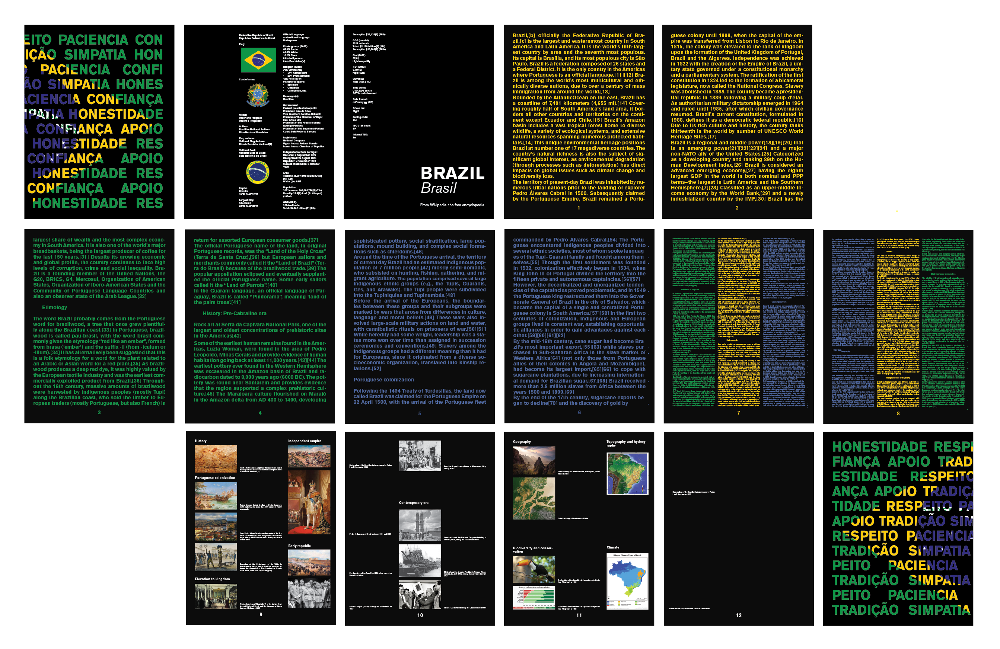

2024
Adobe InDesign
Printed on paper
8.5” x 11”


Using Brazil’s Wikipedia entry, I selected the content for a conceptual book. The goal was to explore the process of translating information from a digital medium to a physical one, considering how meaning shifts when content is reinterpreted visually. I focused on the theme of “threes,” drawing inspiration from Brazil’s flag, which features three primary colors and geometric shapes. This concept was reflected in the book’s layout, color choices, and design elements, emphasizing the symbolic significance of the number three.
Designed using Adobe InDesign, the book spans 16 pages at 8.5 x 11 inches in a landscape format and is saddle-stitched for a clean, minimalist presentation. I used Akzidenz Grotesk as the primary typeface, chosen for its timeless and neutral character, which complemented the informative nature of the text.
